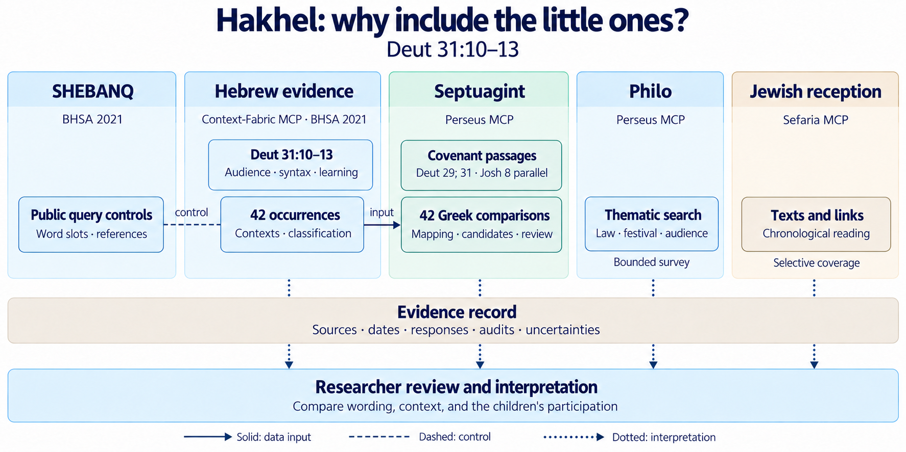

01 · Hebrew evidence
Hakhel and טף in BHSA
Read the central passage and examine all 42 occurrences of ṭap̄ in BHSA 2021 through Context-Fabric MCP.
A textual investigation · Deut 31:10–13
Why does the Hakhel command explicitly include טַף (ṭap̄), the “little ones,” alongside men, women, and the resident foreigner?
The notebooks examine what their presence means for hearing, learning, and participation in the community. The investigation begins with the Hebrew text and follows the question through Greek texts and later Jewish interpretation.
Explore the six notebooksThe approach
Hebrew usage, the Septuagint, Philo, and Jewish reception contribute different kinds of evidence. SHEBANQ provides a separate check against the same Hebrew corpus.

Read the research
Each notebook brings together explanatory notes, code, and saved results. The links open the notebooks on GitHub; the accompanying guides describe their methods and limits.
01 · Hebrew evidence
Read the central passage and examine all 42 occurrences of ṭap̄ in BHSA 2021 through Context-Fabric MCP.
02 · Hebrew controls
Compare five public query records with the Hebrew export. This is another access route to BHSA, rather than an independent textual witness.
03 · Septuagint
Examine the audience descriptions in Deut 29, Deut 31, and the Joshua covenant-reading parallel using Perseus MCP.
04 · Hebrew–Greek comparison
Follow the Hebrew occurrence table into the Septuagint. Suggested lexical candidates and differences in verse numbering remain visible for review.
05 · Philo
Search the available Greek texts for related themes through Perseus MCP. A keyword match alone does not establish a reference to Hakhel.
06 · Jewish reception
Explore texts retrieved through Sefaria MCP alongside a curated chronological table of interpretations.
Work with the material
Start with the setup guide for the route you want to run. The notebooks use different dependencies and data sources; run the Hebrew notebook before rebuilding the 42-row Greek comparison.
Run records and audits document retrievals and unresolved cases. Public services can change, so a later execution may return different results.
Reproduction guide ↗Context-Fabric MCP provides access to the local BHSA corpus.
Perseus MCP supplies the Greek retrieval route. The recorded runs use version 1.0.2; a descriptive document explains the project.
Sefaria MCP supplies the Jewish texts, search results, and links between sources used in the reception-history notebook.
Data rights and attribution explains the different terms applying to BHSA, Greek texts, and Sefaria material.